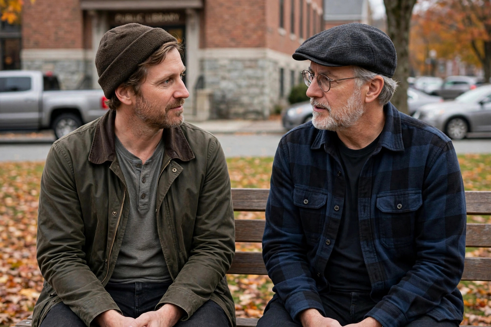

From Wikipedia, the free encyclopedia
| Shays's Rebellion | |
|---|---|
 | |
| Date | 1786–1787 |
| Location | Massachusetts, United States |
| Parties | Massachusetts state government and militia vs. indebted farmers ("Regulators") |
| Result | Rebellion suppressed; contributed to calls for a stronger federal constitution |
Shays's Rebellion was an armed uprising in Western Massachusetts and Worcester in response to a debt crisis among the citizenry and in opposition to the state government's increased efforts to collect taxes on both individuals and their trades. The fighting took place in 1786 and 1787, primarily in and around Springfield, Massachusetts, during the period when the United States was governed under the Articles of Confederation. The rebellion is named for Daniel Shays, a farmer and former soldier who fought at Bunker Hill and led a large group of protesters.
After the American Revolutionary War, Massachusetts faced heavy war debts. Governor James Bowdoin and the state legislature raised taxes sharply and insisted they be paid in hard currency, which was scarce in the rural economy. Farmers who could not pay faced foreclosure and imprisonment for debt, and courts began seizing farms. Rural communities petitioned for relief — paper money, tax reductions, and stays on foreclosures — but the legislature, dominated by eastern merchants, offered little.
Beginning in the summer of 1786, protesters calling themselves "Regulators" shut down county courts in Northampton, Worcester, Concord, and elsewhere to prevent foreclosure proceedings. Daniel Shays emerged as a leading figure among the rebels in Hampshire County. The state government raised a privately funded militia under Benjamin Lincoln to defend the courts and the federal arsenal at Springfield.
On January 25, 1787, Shays led a force of roughly 1,200–1,500 men in an attempt to seize the Springfield Armory. Militia defending the armory under William Shepard fired warning shots and then grapeshot, killing four rebels and dispersing the rest. Lincoln's forces pursued the rebels, and on February 4, 1787, a surprise attack at Petersham scattered the remaining insurgents, effectively ending the rebellion. Shays fled to Vermont.
Most participants were pardoned; a small number were convicted of treason, and two men, John Bly and Charles Rose, were hanged for burglary committed during the rising. Shays himself was pardoned in 1788. The rebellion alarmed leaders across the young republic: it exposed the weakness of the Confederation government, which had been unable to help Massachusetts suppress the uprising, and strengthened the case of the Federalists that a stronger national government was needed. It is widely credited with helping prompt the Philadelphia Convention of 1787 that drafted the United States Constitution, a centralizing project opposed by the Anti-Federalists. George Washington was drawn out of retirement in part by concern over the unrest, and Thomas Jefferson, writing from France, famously remarked that "a little rebellion now and then is a good thing."